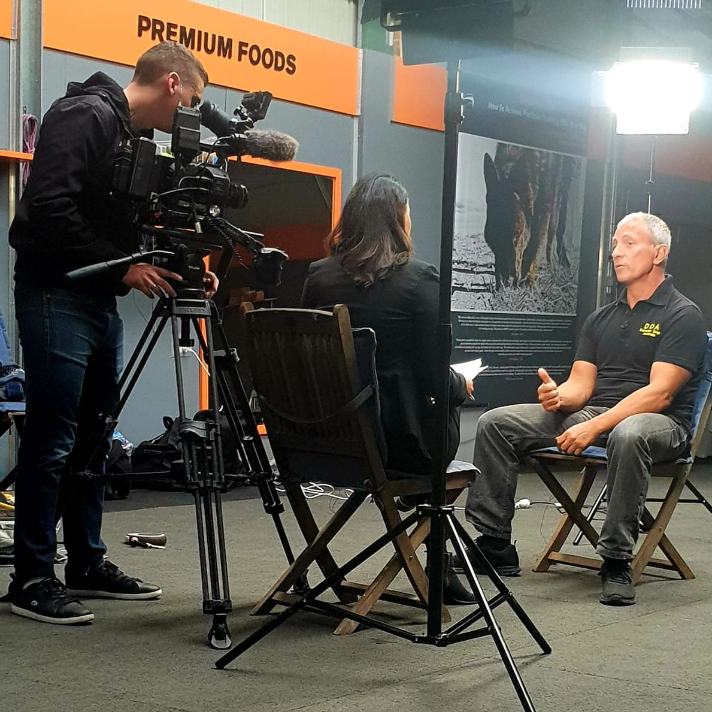
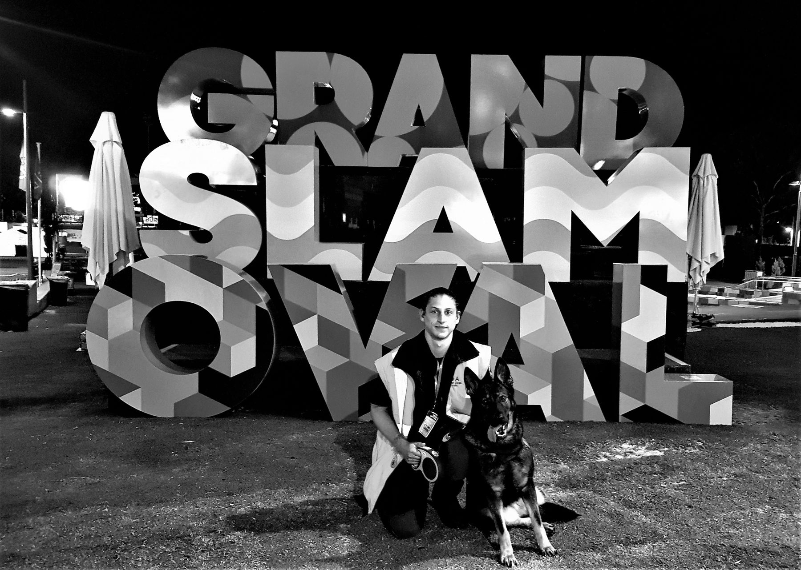
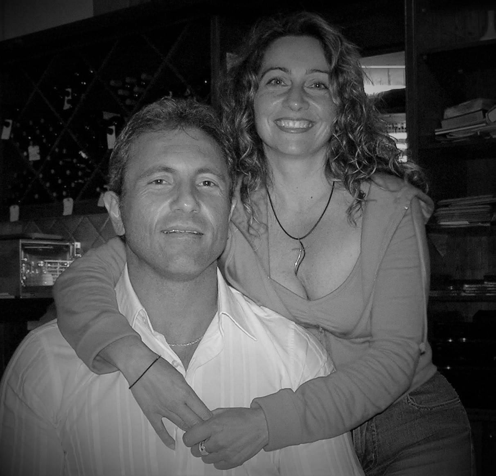

01
A dog let him down when it counted
Kris had trained the dog well. In a real situation it still didn't have the courage or robustness the job needed. Training alone wasn't enough — and that sent him into genetics and breeding in 1982.
Our story
Kris Kotsopoulos has trained working dogs since 1980 and bred them since 1982. Performadog came out of one lesson learned the hard way: you can't train or breed your way past poor nutrition.

01
Kris had trained the dog well. In a real situation it still didn't have the courage or robustness the job needed. Training alone wasn't enough — and that sent him into genetics and breeding in 1982.
02
Years of breeding taught him that selection and nutrition carry a performance animal. If we ask dogs to work like athletes, we have to feed them like athletes.
03
Pro Plan sponsored his kennel for six years. When production moved, his dogs started losing condition — and nothing else on the shelf did what he needed.
04
With animal nutritionist Bill Wiadrowski, Kris developed the food he wanted for his own dogs and fed it to his kennel from 2015. It worked, the trainers and breeders around him asked for it, and Performadog became available to everyone.
“If we are asking dogs to perform at a high level, we are essentially asking them to function like athletes.”Kris Kotsopoulos · confirm wording
Detector Dogs Australia
Kris co-founded Detector Dogs Australia in 2000. Its teams search venues like the MCG and Marvel Stadium, the Port of Melbourne, hospitals and major events — and Kris has been interviewed by SBS and Channel 9 about the work.
NFL letter (Shannon Bodley, NFL Security) goes here once Kris has written permission





File 01 · 45 years with working dogs
1980
First Dobermann. Starts training dogs.
1982
Starts breeding under the Von Forell name.
1984
Sets up a dog security company in Melbourne.
1993
Joins the National Dog Trainers Federation. Starts a frozen semen bank.
2000
Founds Detector Dogs Australia.
2003
Von Forell Vilco wins the National Australian Schutzhund Championship. NDTF life member.
2015
Performadog trials begin in the Von Forell kennel.
2018
Nutritionist Bill Wiadrowski joins.
Kris to sign off every date — his own sites give 1980 and 1981 for the first Dobermann.
Photo: Bill Wiadrowski
The nutritionist
Animal nutritionist designing dog and cat diets since 1986, and the mind behind Nutrient Ramping. Kris and Bill have built Performadog together since 2018. Qualifications
Watch Bill answer 41 questions →
Kris & Tonia
Kris and Tonia run Von Forell from Pheasant Creek, 45 km north of Melbourne. Von Forell litters are raised on Performadog. Kris also co-founded Detector Dogs Australia, whose teams work venues like the MCG and Port of Melbourne.
Visit Von Forell →Next step
Free metro delivery over $150 · subscribe, skip or cancel anytime · palatability guarantee